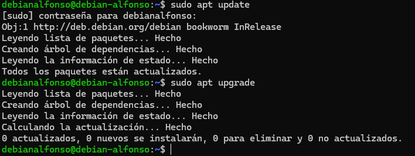
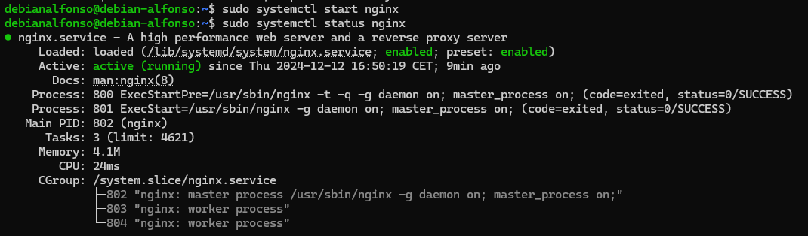
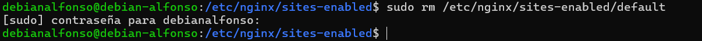
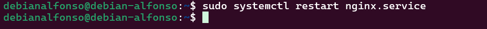

Práctica de Amplicación.- Configuración de un servidor Nginx con Hosts Virtuales y directorios de usuario
El fin de esta práctica es configurar un servidor Nginx que utilice hosts virtuales para alojar múltiples sitios web en un mismo servidor y que a su vez, cada host virtual apunte al directorio public_html de distintos usuarios del sistema operativo Debian. De esta manera, cada usuario podrá gestionar su propio sitio web desde su carpeta personal.
Antes de empezar a seguir los pasos para esta configuración, nos conectaremos mediante SSH desde nuestra máquina a la máquina Debian. Para ello usamos el comando ssh nombreUsuario@direccionIP.

1.- Instalación de Nginx
El primer paso para instalar nginx es actualizar los repositorios del sistema mediante sudo apt update y sudo apt upgrade.

Para instalar nginx usamos el comando sudo apt install nginx -y.

Iniciamos el servicio con sudo systemctl start nginx y despues verificamos que esté funcionando correctamente con sudo systemctl status nginx.

Si esta todo bien, veremos un mensaje en color verde, que pondra active(running).
2.- Creación de usuarios del sistema.
En este paso, crearemos dos usuarios con contraseñas seguras con el comando sudo adduser nombreUsuario, en mi caso sera usuario y usuario2.

3.- Estructura de carpetas y Archivos.
-
El primer paso será crear la carpeta
public_htmlen los directorios de cada usuario consudo mkdir /home/nombreUsuario/public_html.
-
Después, asignamos los permisos a cada usuario sobre su directorio con el comando
sudo chown -R nombreUsuario:nombreUsuario /home/nombreUsuario/public_htmlysudo chmod 755 /home/nombreUsuario. Este proceso hay que hacerlo con ambos usuarios.
-
Por último, creamos una página web de prueba en la carpeta
public_htmlde cada usuario. Para ello, cambiamos de usuario consu nombreUsuarioy creamos el archivo de la página web con el comandoecho "<h1>Bienvenido al sitio de nombreUsuario</h1>" > /home/nombreUsuario/public_html/index.html. Este proceso lo repetimos con ambos usuarios.
4.- Configuración básica de Nginx
En este paso borraremos los sitios habilitados en nuestro servidor de Nginx para evitar posibles conflictos. En caso de haber hecho una instalación limpia, solamente tendremos que borrar default con el comando sudo rm /etc/nginx/sites-enabled/default.

Podemos verificar si se ha borrado correctamente con el comando ls.

5.- Creación de host virtuales
5.1.- Creación de archivos de configuración
Aquí crearemos dos archivos de configuración de host virtual en /etc/nginx/sites-available/, uno para cada usuario. Para ello usamos el comando sudo nano /etc/nginx/sites-available/nombreDescriptivo.
Se nos abrirá una ventana vacía donde tendremos que implementar la siguiente configuración:
server {
listen 80;
server_name usuario1.local;
root /home/usuario1/public_html;
index index.html;
location / {
try_files $uri $uri/ =404;
}
}

Ahora realizamos los mismos pasos para el segundo usuario.

5.2.- Habilitar los enlaces simbólicos
En este paso crearemos los enlaces simbólicos de ambas páginas con sudo ln -s sudo ln -s /etc/nginx/sites-available/nombreUsuario /etc/nginx/sites-enabled/. Con este comando habilitamos nuestra página.

Verificamos la configuracion con sudo nginx -t para asegurarnos que no hay errores.
Y por ultimo, reiniciamos Nginx con sudo systemctl restart nginx.

6.- Configuración del archivo host
Para que nuestras páginas funcionen, deberemos editar nuestro fichero hosts en tu sistema local para poder resolver los dominios creados y así poder acceder. En Windows, editamos C:\Windows\System32\drivers\etc\hosts. y ponemos lo siguiente:
Guardamos los cambios y accedemos a nuestro navegador para ver el contenido:
7.- Implementación de conexión segura
Ahora que sabemos que podemos acceder a nuestros sitios webs, los modificaremos para acceder mediante HTTPS, para ello, lo primero que tendremos que hacer es generar un certificado SSL, para ello lo primero que hacemos es crearnos un directorio donde guardarlos con sudo mkdir /etc/nginx/ssl.

Después, nos creamos nuestro certificado ssl con:
sudo openssl req -x509 -nodes -days 365 -newkey rsa:2048 \
-keyout /etc/nginx/ssl/nginx-selfsigned.key \
-out /etc/nginx/ssl/nginx-selfsigned.crt
En el proceso de creación, nos pedirá distintos datos para la creación del certificado.

7.1.- Modificación de los archivos de configuración
Ahora actualizamos la configuración de los hosts virtuales con sudo nano /etc/nginx/sites-available/nombreArchivo donde introduciremos una nueva sección para agregar el bloque HTTPS.
server {
listen 443 ssl;
server_name usuario1.local;
ssl_certificate /etc/nginx/ssl/nginx-selfsigned.crt;
ssl_certificate_key /etc/nginx/ssl/nginx-selfsigned.key;
root /home/usuario1/public_html;
index index.html;
location / {
try_files $uri $uri/ =404;
}
}
Quedaría de la siguiente manera:

Ahora repetimos el proceso con el otro archivo de configuración.
Verrificamos la configuración de Nginx con sudo nginx -t y lo reiniciamos con sudo systemctl restart nginx.
Lo último es probar los cambios, para ello accedemos a nuestro navegador y visitamos https://usuario1.local y https://usuario2.local. Al ser un certificado autofirmado, al entrar en la página nos aparecerá la siguiente pantalla, donde necesitaremos aceptar los riesgos para poder acceder.
Y ya podriamos ver el contenido.

Si queremos ver el certificado, clicamos en el candado que aparece al lado de la url y veremos la información.